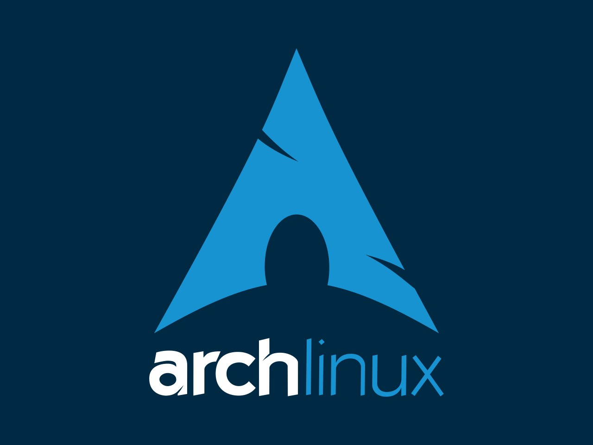

Arch Linux
Arch Linux — это минималистичная, гибкая и "rolling-release" система, ориентированная на опытных пользователей. Она предоставляет только базовые компоненты, позволяя настроить систему под свои нужды с нуля. Arch использует менеджер пакетов pacman и предоставляет актуальное ПО благодаря своей философии "Keep It Simple". Однако установка и настройка требуют глубоких знаний Linux.